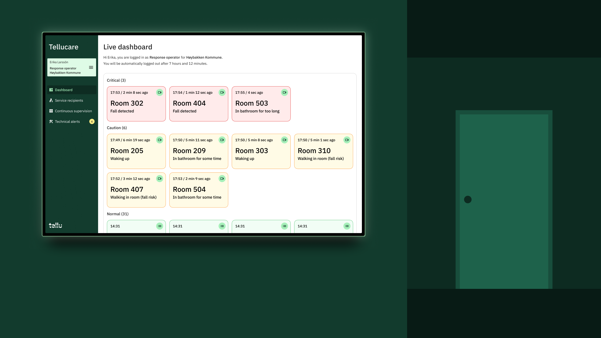
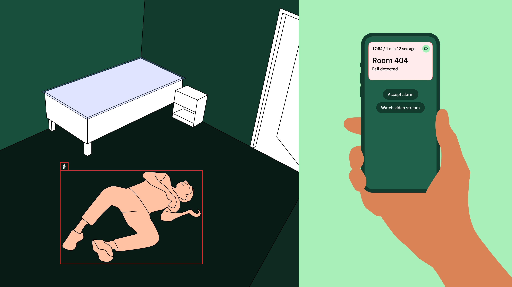
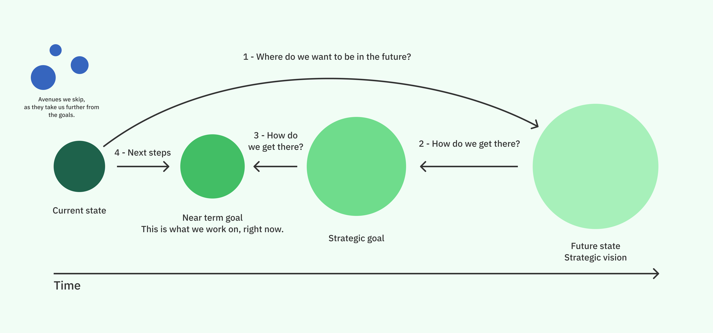
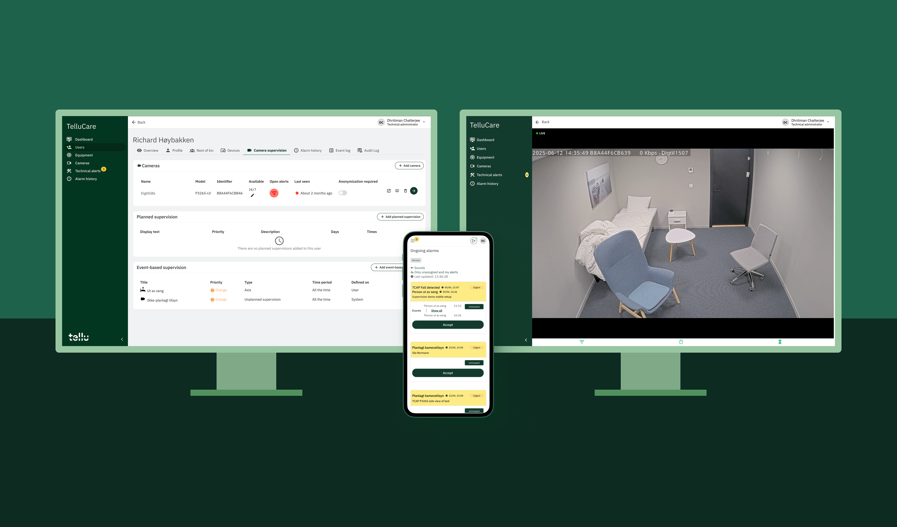
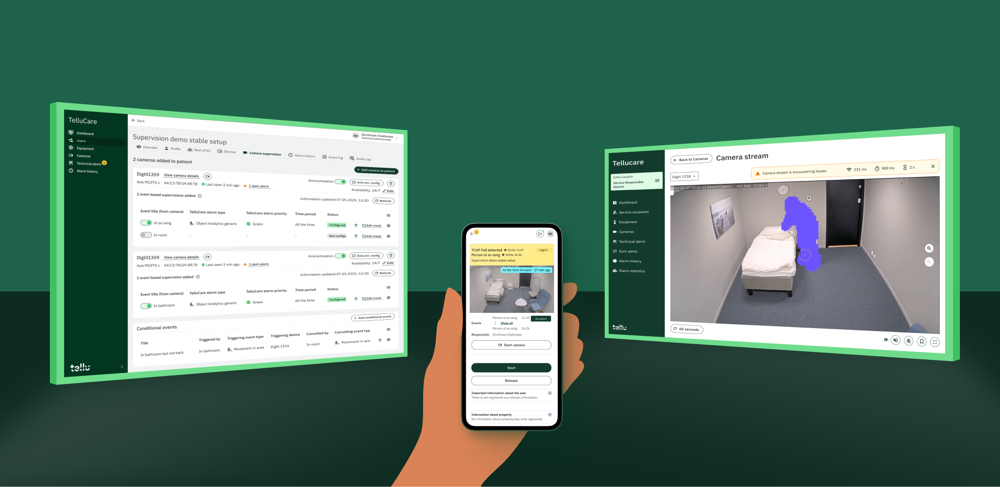
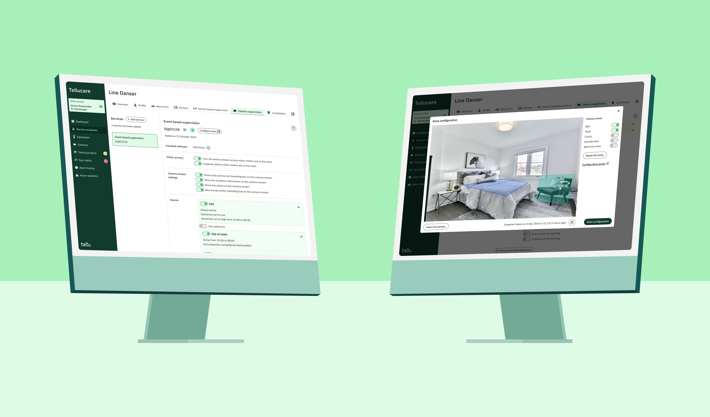
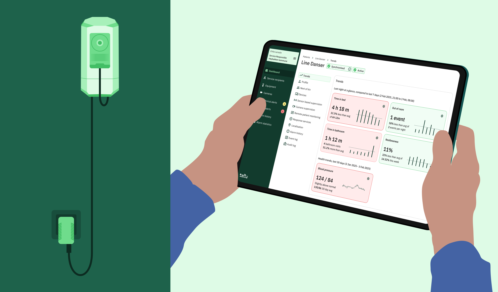

Redesigning AI camera based alarm system for senior homes at Tellu
Camera based digital supervision is a core product for Tellu, which lets nurses see into a patient's room with a camera, if there's been an alarm or an incident.

The project in brief:
Context
The Digital Supervision software in Tellu has been made over a long time by engineers doing their best to fulfil the myriad of the wishes of demanding customers.
Without a proper vision, the iterative additions to the software have made it heavy, complex and complicated. Fulfilling all customer wishes have, ironically, made it confusing for the customers to use.
Objective
Tellu wants to be a industry leader in Digital Supervision. The project strategises what we want Digital Supervision to be in the future and chalks out the iterative steps to get there.

The process:
Foresighting / Backcasting
Where do we want to be in the future? What do we step by step to get there?
The process starts with acknowledging the shortcomings in the current state of the product. Then a grand vision of an ideal scenario is prepared and presented. Then the team works together to come up with a viable middle ground to work on today.

Current state:
Complex, complicated and legacy software - but it does the job
In the initial state of the project, Digital Supervision works, is useful, saves lives and improves nurse's lives. But it is confusing, difficult to set up, easy to make mistakes, difficult to catch mistakes and hard to learn. There is much room for improvement.
The image here shows the 3 main parts of supervision, setting up, alarm handling and video streaming, from left to right.

Intermediate state:
Easier and more guided setup. Some new ways of doing things, while maintaining familiarity.
The setup is made easier and more guided. The users know what to click next and the flow makes sure that the setup is well done. All the issues with the setup are made visible and the steps to fix mistakes is clearly marked.
The interface is still more functional than delightful. But it makes users more efficient and raises their trust in the system, when they can see all the system statuses.

Long term vision:
Everything you need, in one place
Currently, two different systems need to be managed separately for supervision to work. That is fine, as the setup is reserved for highly trained superusers. However, in the future, when everyone can use the system, everything should be in one place in one natural flow.
A completely new software using AI for sensing will replace reactive alarm handling with proactive data and dashboard based care.

Conclusion:
Design informing strategy
Using a design process from a futures toolkit proved to be extremely valuable in a product development process. Grand visions were used to "inspire" the right solutions for the near term.
This way, day to day efforts have a higher chance of returning cumulative value.
Tellu Trends - digital supervision as proactive care
This process paved the way for a new kind of supervision. The cameras and sensors collect data over time and present a dashboard for the nurses, to take proactive care.
It is no longer about reacting to accidents, but rather preventing them before they happen.
